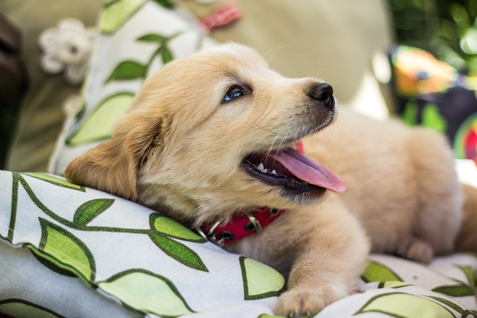
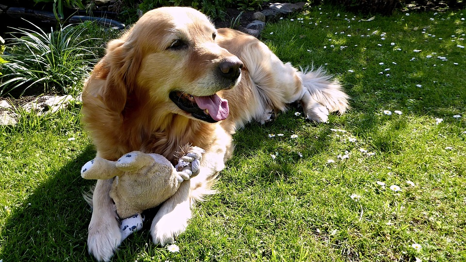

Golden Retrievers
I have had two family dogs in my life, and they were both golden retrievers. This may have made me biased toward them but they have always been one of my favorites.
Execellent Play Friends
In my expereience, golden retrievers have always been excellent play friends. They almost always are willing to play fetch or go after a toy you are holding. It is one of the reasons they make such great companions.